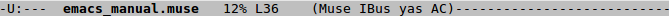

Last Updated: September 27, 2011

一个frame从上到下的布局分别为
There are some words in this line.如果游标在
words上，那么point就在o和i之间。
echo area也会显示一些消息，比如说是错误信息。如果是单个字符的命令，那么不会在echo area中显示。如果是多字符的组合命令，并且你在输入一部分后停留了1秒钟，那么它会显示你已经输入的那部分命令，来给予你提示。echo area中的内容储存在*Messages* Buffer中，方便日后查看。echo area还被用做minibuffer。有一些命令需要你输入参数，比如说打开文件时候需要输入文件名，那么就会用到minibuffer。你会在echo area中输入mini buffer的内容。
-cs:ch-fr buf pos line (major minor)-----------下面是当前我的模式栏中的内容:

cs代表的是buffer的字符集。如果是‘-’， 则代表除了换行符变换，没有特别的字符集处理。如果是‘=’代表没有转换， 如果是'1'代表ISO Latin-1。如果在终端下，则稍许会有不同，我们就不在这里讨论了。
在cs后的字符通常是一个冒号'：'，代表的是普通的换行方式。在一些情况下，可能它显示别的内容，代表不一般的换行方式,他们并不是newline字符。
cs显示为‘/’或'(Dos)'。cs显示为'\'或'(Mac)'。对于mode line里接下去的一个元素ch， 如果是'--',则表示buffer中的内容和磁盘上的内容是一致的。如果内容有过修改，则会显示'**"。对于只读的buffer，会显示'%*',如果buffer被修改过了。反之为'%%'。
ch后通常是一个'-'。如果当前buffer在一个远程的机器上的话，那么将会显示'@'。
fr表示的是选择的frame名称，只会在终端上显示。
buf表示的是窗口中buffer的名称，通常也是你编辑的文件名。
pos表示的是在当前buffer中的位置。如果在buffer的顶部，会显示'Top'。 如果在buffer的底部， 则会显示'Bot'。如果在buffer很小，全部显示在窗口中，那么pos就会显示'All'。 'nn%'表示的是窗口上面的buffer的百分比。
line是由'L'和point在buffer中的行数组合而成的。
major是窗口的主要模式，比如Text Mode, C Mode, Lisp Mode等等。
minor是一串窗口的次要模式，比如说有关补全的模式autocomplete， yasnippet等。
Emacs是为键盘输入而设计的，因为这通常要比鼠标输入要快。 键盘输入大致分以下三个大类：
1. 图形符号，比如'a', 'B'， ' = ',还包括一些非英语键盘上的字符。
2. 控制字符，比如‘RET', 'DEL', 'ESC', 'F1', 'Home', 'Left'。
3. Modifier Keys, 常用的有‘Control(Ctrl)', 'Meta(Alt)'。
Modifier Keys的输入其实就是我们熟悉的组合键。比如C-a代表的是按住‘Control’,再按字母‘a’；M-c代表按住‘Meta(Alt)’, 再按‘c’。在一些终端上，'Meta'的使用会遇到问题。需要按‘Meta’的地方可以先按‘Esc’,放开后再按相应的字母。比如M-c可以先按‘Esc’,放开，再按‘c’。
在终端上，只要输入emacs,就能启动Emacs。
为了终端不被占用，在shell上也可以输入emacs&
变量inhibit-startup-screen和initial-buffer-choice共同决定了Emacs启动后显示的buffer。
默认这两个变量都是nil，Emacs显示开机欢迎界面。如果你希望不要显示开机画面，那么可以把inhibit-startup-screen设置成non-nil，比如：
(setq inhibit-startup-screen t)
如果你在命令行里指定了文件名，将会显示这些文件。如果没有，将会显示'*strach*'buffer。
如果你需要开机后buffer固定显示某目录或是某文件（即使命令行参数中指定了一个或多个文件，它们将只被打开，而不会显示在buffer中），那么可以对initial-buffer-choice进行赋值。比如：
;; this will show the directory "~/Projects/" at startup (setq initial-buffer-choice "~/Projects/")
;; this will show the directory "~/Projects/myfile.txt" at startup (setq initial-buffer-choice "~/Projects/myfile.txt")
;; this will show the '*stratch*' buffer at startup (setq initial-buffer-choice t)
*strach*的内容可以通过变量initial-strach-message进行设置，比如：
(setq initial-scratch-message ";; Emacs makes a computer slow.\n")
C-q后输入一个非图形字符，那么，这个字符将被插入（即使后面输入的是C-g。比如C-q DEL插入了字符DEL。C-q后输入的是一串八进制的数字，那么出现的第一个非数字输入将结束这个序列。最终八进制所代表的字符和那个非数字字符将被插入将被插入（如过非数字字符是RET,那么
RET只是起到结束八进制数字并插入的作用，RET本身并不会被输出）。
比如'C-q 1 0 1 B'输出'AB', 'C-q 2 5 1 RET'输出©。输入标准的Unicode名称或是Unicode的十六进制编码，将会在buffer中插入相应的Unicode字符。
移动到行首
移动到行末
向后移动一个字符
向前移动一个字符
向后移动一个单词
向前移动一个单词
向下移动一行
向上移动一行
获得光标所在字符的信息。